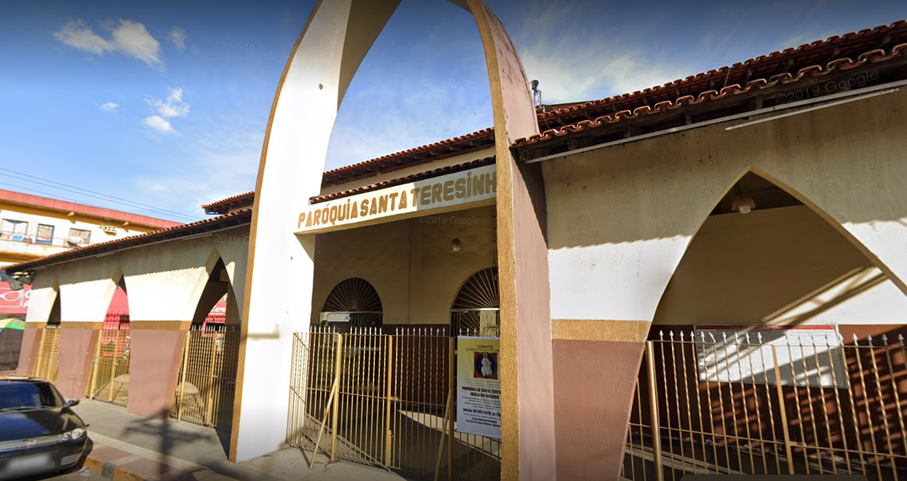
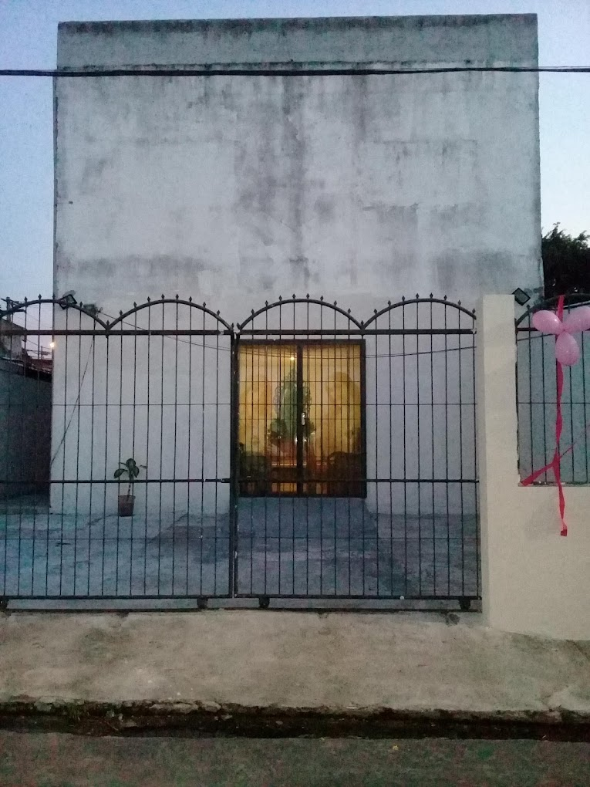
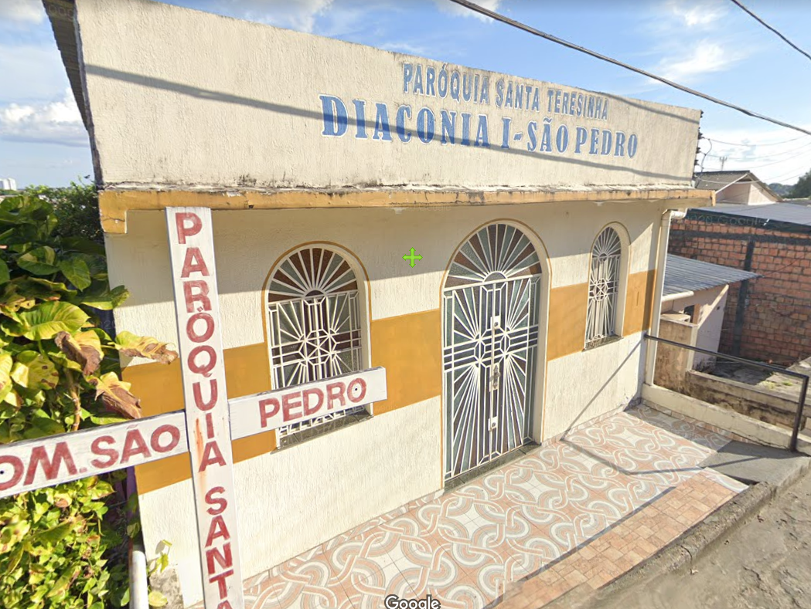

<mat-drawer-container>
    <mat-drawer mode="side" [opened]="sideBarOpen">
      <app-sidenav></app-sidenav>
    </mat-drawer>
    <mat-drawer-content>
        <app-header (toggleSidebarForMe)="sideBarToggler()"></app-header>
          
        <div class="container-fluid page">
            <div class="page__box p-3 mt-2">Doações</div>
                <div class="page__content shadow p-3 position-relative">
                    <div class="gallery-container">
                
                        <a routerLink="/colaboracao/doacoes/qrcode/santa-teresinha" id="santa_teresinha" class="gallery-items">
                            
                            <span>Santa Teresinha</span>
                        </a>
                        
                        <a routerLink="/colaboracao/doacoes/qrcode/ns-rosario" id="ns_rosario" class="gallery-items">
                            
                            <span>Nossa Senhora do Rosário</span>
                        </a>
                        <a routerLink="/colaboracao/doacoes/qrcode/sc-jesus" id="sagrado_coracao" class="gallery-items">
                            
                            <span>Sagrado Coração de Jesus</span>
                        </a>
                        
                        <a routerLink="/colaboracao/doacoes/qrcode/sao-pedro" id="sao_pedro" class="gallery-items">
                            
                            <span>São Pedro Apóstolo</span>
                        </a>

                        <a routerLink="/colaboracao/doacoes/qrcode/ns-perpetuo-socorro" id="nossa_senhora_ps" class="gallery-items">
                            
                            <span>N.S Perpétuo Socorro</span>
                        </a>
                   
                     </div>  
                    <div class="page__content-data position-absolute text-center">
                </div>
            </div>
        </div>
                
    </mat-drawer-content>
</mat-drawer-container>